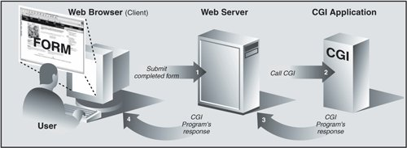

20.4. CGI: Helping Web Servers Process Client Data20.4.1. Introduction to CGIThe Web was initially developed to be a global online repository or archive of (mostly educational and research-oriented) documents. Such pieces of information generally come in the form of static text and usually in HTML. HTML is not as much a language as it is a text formatter, indicating changes in font types, sizes, and styles. The main feature of HTML is in its hypertext capability, text that is in one way or another highlighted to point to another document in a related context to the original. Such a document can be accessed by a mouse click or other user selection mechanism. These (static) HTML documents live on the Web server and are sent to clients when and if requested. As the Internet and Web services evolved, there grew a need to process user input. Online retailers needed to be able to take individual orders, and online banks and search engine portals needed to create accounts for individual users. Thus fill-out forms were invented, and became the only way a Web site can get specific information from users (until Java applets came along). This, in turn, required the HTML now be generated on the fly, for each client submitting user-specific data. Now, Web servers are only really good at one thing, getting a user request for a file and returning that file (i.e., an HTML file) to the client. They do not have the "brains" to be able to deal with user-specific data such as those which come from fields. Not being their responsibility, Web servers farm out such requests to external applications which create the dynamically generated HTML that is returned to the client. The entire process begins when the Web server receives a client request (i.e., GET or POST) and calls the appropriate application. It then waits for the resulting HTMLmeanwhile, the client also waits. Once the application has completed, it passes the dynamically generated HTML back to the server, who then (finally) forwards it back to the user. This process of the server receiving a form, contacting an external application, and receiving and returning the newly-generated HTML takes place through what is called the Web server's CGI (Common Gateway Interface). An overview of how CGI works is illustrated in Figure 20-3, which shows you the execution and data flow, step-by-step, from when a user submits a form until the resulting Web page is returned. Figure 20-3. Overview of how CGI works. CGI represents the interaction between a Web server and the application that is required to process a user's form and generate the dynamic HTML that is eventually returned.Forms input from the client sent to a Web server may include processing and perhaps some form of storage in a backend database. Just keep in mind that any time there are any user-filled fields and/or a Submit button or image, it most likely involves some sort of CGI activity. CGI applications that create the HTML are usually written in one of many higher-level programming languages that have the ability to accept user data, process it, and return HTML back to the server. Currently used programming languages include Perl, PHP, C/C++, or Python, to name a few. Before we take a look at CGI, we have to provide the caveat that the typical production Web application is no longer being done in CGI anymore. Because of its significant limitations and limited ability to allow Web servers to process an abundant number of simultaneous clients, CGI is a dinosaur. Mission-critical Web services rely on compiled languages like C/C++ to scale. A modern-day Web server is typically composed of Apache and integrated components for database access (MySQL or PostgreSQL), Java (Tomcat), PHP, and various modules for Perl, Python, and SSL/security. However, if you are working on small personal Web sites or ones for small organizations and do not need the power and complexity required by mission critical Web services, CGI is the perfect tool for your simple Web sites. Furthermore, there are a good number of Web application development frameworks out there as well as content management systems, all of which make building CGI a relic of past. However, beneath all the fluff and abstraction, they must still, in the end, follow the same model that CGI originally provided, and that is being able to take user input, execute code based on that input, and provide valid HTML as its final output for the client. Therefore, the exercise in learning CGI is well worth it in terms of understanding the fundamentals in order to develop effective Web services. In this next section, we will look at how to create CGI applications in Python, with the help of the cgi module. 20.4.2. CGI ApplicationsA CGI application is slightly different from a typical program. The primary differences are in the input, output, and user interaction aspects of a computer program. When a CGI script starts, it needs to retrieve the user-supplied form data, but it has to obtain this data from the Web client, not a user on the server machine nor a disk file. The output differs in that any data sent to standard output will be sent back to the connected Web client rather than to the screen, GUI window, or disk file. The data sent back must be a set of valid headers followed by HTML. If it is not and the Web client is a browser, an error (specifically, an Internal Server Error) will occur because Web clients such as browsers understand only valid HTTP data (i.e., MIME headers and HTML). Finally, as you can probably guess, there is no user interaction with the script. All communication occurs among the Web client (on behalf of a user), the Web server, and the CGI application. 20.4.3. cgi ModuleThere is one primary class in the cgi module that does all the work: the FieldStorage class. This class should be instantiated when a Python CGI script begins, as it will read in all the pertinent user information from the Web client (via the Web server). Once this object has been instantiated, it will consist of a dictionary-like object that has a set of key-value pairs. The keys are the names of the form items that were passed in through the form while the values contain the corresponding data. These values themselves can be one of three objects. They can be FieldStorage objects (instances) as well as instances of a similar class called MiniFieldStorage, which is used in cases where no file uploads or multiple-part form data is involved. MiniFieldStorage instances contain only the key-value pair of the name and the data. Lastly, they can be a list of such objects. This occurs when a form contains more than one input item with the same field name. For simple Web forms, you will usually find all MiniFieldStorage instances. All of our examples below pertain only to this general case. |